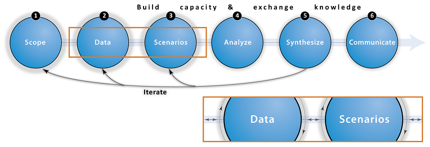

Iterate

Overview and Goals
Iteration is key to using ecosystem services approaches in marine spatial planning. By iteration we mean repeatedly revisiting one step or many steps in the science-policy process to improve results over time. Engaging stakeholders and local experts will allow you to share preliminary outputs to get feedback, enhance the transparency of your process, create buy-in, and build capacity to use ecosystem service approaches in MSP. Iteration is extremely important for making progress in a complicated process like marine spatial planning. It allows you and your partners to move forward and better understand what science and information is really needed to inform decision-making, rather than get stuck trying to perfect the results from a particular step.
Iteration can occur within each step, and over the entire process. For example, Scoping (step 1) involves defining a problem and identifying key partnerships and stakeholders. These partners and stakeholders will bring additional insights, issues, and capacities to the process, which can in turn influence ecosystem service priorities, scenarios and synthesis. Also, the Data and Analyze steps often benefit from iteration. Starting your analysis with readily available data, even if it is coarse, can help identify critical data gaps and encourage local institutions and stakeholders to participate in the process and contribute better data. Communicating results to new audiences will help identify new questions that require further data collection, scenario development, analysis, or synthesis. Finally, through iteration you can use the outputs from your ecosystem service analysis to inform changes you want to make to improve your spatial plan (i.e., revise the Scenario step). This is an approach we used in our work in Belize and explain below in the case study section.
The following is a diagram of an approach for ecosystem service assessment, that we have found useful in our engagements (see further details in Rosenthal et al. 2014). Iteration is critical within each step of the process (orange inset) and between steps (inset again) for the entire process to be effective. We find that revisiting steps 1-3 after Synthesize (step 5) are the most common pathways for iteration; however, other trajectories occur as well.


Tips
- Use iteration early on to identify additional data needs, produce initial results to show to local contacts, and get more comfortable with the mechanics of applying scenario development and ecosystem service analysis tools (CITE BZ SCENARIO CASE STUDY).
- Expect to iterate through your planning process and use this expectation as a way of moving forward, rather than getting stuck trying to perfect the outputs from each step.
- Plan to iterate through the science-policy process to ensure your process is responsive to changing conditions.
- Iterate through the Scenario, Analyze and Synthesis steps to design a “preferred” spatial plan (ARKEMA ET AL IN REVIEW).

Frequently Asked Questions (FAQ)
Q: How do I know when to move on to the next step?
A: Navigating through the different steps of this approach takes practice. With that said, returning to previous steps with new information is rarely a waste of time. At the very least, it will solidify your goals for each step and help your team move forward.
Q: How many iterations are typical within an MSP project?
A: The number of iterations for a project depends on your timeline and other factors (funding, capacity, etc.). Some of our use-cases (e.g., Barbados) were conducted under tight project windows that only allowed for a few iterations. For other projects, like Belize and Vancouver Island, we had several years to work through this approach, learn from our mistakes, and revisit previous steps with better information and experience. It is also worth noting, that you can save some iteration by looking forward to the next step and anticipating needs. For example, if you think ahead about what analytical approaches you plan on using, that can inform the data step and may prevent you from having to go back to the data step to collect additional data for your analysis.

Use-Cases
Belize
In our work with the national government of Belize to design an Integrated Coastal Zone Management plan, the iterative process involved policymakers, stakeholders and scientists. We developed scenarios to investigate the consequences of alternative planning policies and inform the Belize ICZM Plan. The composition of these scenarios changed over time to reflect improved data sources, local knowledge, and insights gained from outputs from InVEST models. The process resulted in three contrasting future scenarios for the year 2025 (see figure 1).
Conservation prioritizes a vision of long-term environmental health through conservation of existing ecosystems.
Development presents a vision of rapid economic growth based on natural resource utilization and urban expansion. It prioritizes immediate development needs and the interests of coastal developers and extractive industries over the proactive preservation of ecosystem services. As the process progressed, this scenario came to represent possible construction and development that could occur without zoning guidelines.
Informed management represents a policy supporting sustainable development of coastal resources to ensure future economic benefit for Belizeans. Informed management blends environmental conservation goals with current needs for coastal development and marine uses that relate to Belize’s top industries. This scenario was originally called “middle-of-the-road,” and then “compromise scenario,” to reflect a compromise between conflicting viewpoints of environmental preservationists and economic development interests. Eventually, it was developed into a science-based zoning scheme for enhancing ecosystem services and reducing risk to habitats that provide those services. Importantly, this scenario integrated the views of a broad range of stakeholders and was refined using ecosystem service information from InVEST. It became the preferred zoning scheme recommended by the Coastal Zone Management Authority and Institute in the coastal zone management plan.
The preferred version of the zoning scheme was reached after several iterations through Steps 1-6. Results from our models suggest that this final version of the plan will result in 25-100% better returns from services than the initial version of the Informed Management scenario (COULD CITE FIGURES IN THE PAPER). The first version was designed to sit between the Conservation and Development scenarios prior to accounting for changes in ecosystem service values. Modeling services delivered by the first iteration indicated substantial losses for lobster catch and revenue, avoided damages from storms and area of functional habitat relative to current conditions.
To improve the zoning scheme, we used the results from our ecosystem service models (Step 4: Analyze) to identify planning regions where our models predicted that service delivery would decrease relative to the present scenario. We then used the Habitat Risk Assessment model (Arkema et al. 2014) to determine which activities and where were causing the greatest risk to habitats that provide important services in that region. Taking into account the expressed stakeholder priorities for specific activities, we shifted the locations and reduced the extent of these activities (Fig. 2 below).
The second iteration of the Informed Management scenario predicted a dramatic increase in the area of habitats capable of providing services relative to the Current, Development, and ‘compromise’ scearios, and concomitant increases in the delivery of almost all services in all regions. The area devoted to some activities decreased in extent and shifted locations (oil exploration, dredging, aquaculture), while the area of others increased (e.g., coastal development). The second iteration of the Informed Management scenario was reviewed during a 60-day public comment period from May through July 2013. As a result of several expert reviews, public commentary and changes in national legislation, we incorporated new data sources, local knowledge and local preferences about the distribution of habitats and human activities and produced the final Informed Management scenario (Step 3: Scenarios) and expected returns from services (Step 4: Analzye).
top